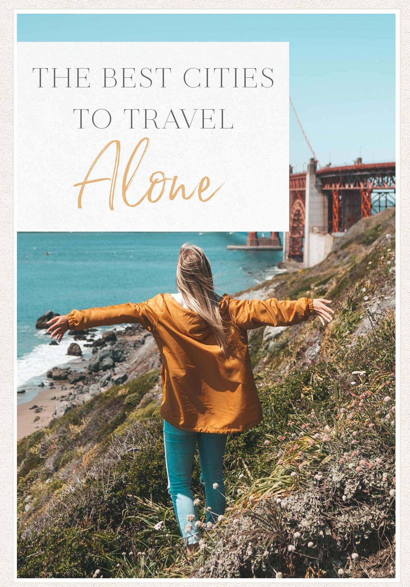

THENOMADICNARRATIVES
The Best Cities to Travel Alone
Solo travel for men and solo trips are what I’m all about…so if you’re looking for solo travel destinations, you’re in the right place!
Ready to see the world? Do it on your own timeline! For the ultimate in indulgent travel, take a solo adventure. There are few things as liberating and exciting as traveling alone.
For me, factors that make a city great for solo travel are: the ease of getting around by yourself (whether there is a good transportation system or it’s easily walkable), how safe a city is, whether the city is known for friendly locals (you never know when you’ll need a helping hand), and the number of sights to see!
See exactly what you want to see, maximize every moment, and open yourself up to experiences that you would have never had traveling with friends or family.
Feeling inspired? Get out there! I know traveling alone can be scary, but it is so worth it.
Here are the best cities to travel alone around the world!


Icelandic Escapes
Iceland is a land of untamed beauty and enchanting landscapes. Our blog offers an immersive journey through this captivating country. With vivid storytelling and stunning imagery, we invite readers to embark on virtual adventures. From cascading waterfalls and towering glaciers to the mesmerizing Northern Lights, each post unveils the hidden gems and natural wonders that make Iceland a truly unique destination. Whether you're seeking travel inspiration, practical tips, or a moment of wanderlust, join us as we uncover the essence of Iceland's unparalleled allure.
Things to Do :
- Chase the Northern Lights: Experience the mesmerizing display of the Aurora Borealis dancing across the Arctic sky during the winter months.
- Visit the Blue Lagoon: Relax in the geothermal waters of the famous Blue Lagoon spa, surrounded by otherworldly volcanic landscapes.
- Tour the Golden Circle: Embark on a day trip to explore Iceland's most famous attractions, including the Geysir geothermal area, Gullfoss waterfall, and Thingvellir National Park.
- Go Glacier Hiking: Experience the thrill of hiking on a glacier, such as Vatnajökull or Sólheimajökull, and marvel at the stunning ice formations.

Artisanal Italy
Tales from the Eternal City" takes readers on a captivating journey through the storied streets of Rome, where ancient history blends with modern charm. Our blog chronicles the timeless beauty, cultural riches, and vibrant life of the Eternal City through engaging stories and vivid images. From the iconic Colosseum and Vatican to hidden gems in cobblestone alleys, each post unveils the secrets and splendors of Rome. Dive into the city's rich past, savor its culinary delights, and immerse yourself in its vibrant art and culture. Whether you're an experienced traveler or an armchair explorer, join us as we unravel the enchanting tales of Rome, where every corner holds a new chapter in the eternal rhapsody of this magnificent city.
Things to Do :
- Relax on Stunning Beaches: Enjoy the sun and sea on Italy's beautiful beaches, including the Amalfi Coast, the Italian Riviera, and the island of Sicily, where you can swim, sunbathe, and soak up the Mediterranean atmosphere.
- Experience Local Festivals: Join in the festivities during Italy's vibrant festivals and events, such as the Venice Carnival, Siena's Palio horse race, and the Verona Opera Festival, for an unforgettable cultural experience.
- Go Wine Tasting: Explore Italy's famous wine regions, such as Tuscany, Piedmont, and Sicily, where you can sample a variety of wines and learn about the country's winemaking traditions.
- Explore Historical Landmarks: Immerse yourself in Italy's rich history by visiting iconic landmarks such as the Colosseum in Rome, the Leaning Tower of Pisa, the Pantheon, and the Roman Forum.

Japanese Journeys
Experience the Land of the Rising Sun through our immersive blog, where we delve into the unique culture, traditions, and landscapes of Japan. From the bustling streets of Tokyo to the serene temples of Kyoto, each post invites you to explore the wonders of Japan's ancient and modern worlds. Discover the art of sushi-making, witness the beauty of cherry blossom season, and immerse yourself in the tranquility of Japanese gardens. Whether you're a seasoned traveler or dreaming of your first visit to Japan, join us as we embark on unforgettable journeys across this fascinating country.
Things to Do :
- Experience Cherry Blossom Season: Witness the breathtaking beauty of Japan's cherry blossom trees in full bloom, a cultural phenomenon celebrated with hanami (flower viewing) picnics and festivals.
- Explore Historic Temples and Shrines: Step into Japan's rich spiritual heritage by visiting iconic temples such as Kyoto's Kinkaku-ji (Golden Pavilion) and Tokyo's Senso-ji Temple.
- Indulge in Japanese Cuisine: Treat your taste buds to a culinary journey through Japan's diverse flavors, from savory sushi and ramen to delicate wagashi (traditional sweets).
- Embrace Japanese Arts and Crafts: Discover the art of traditional crafts such as pottery, calligraphy, and origami, and immerse yourself in the world of manga and anime.

French Adventures
Embark on a journey through the enchanting landscapes and rich culture of France with our immersive blog. From the romantic streets of Paris to the sun-kissed vineyards of Provence, each post captures the essence of French art, cuisine, and joie de vivre. Indulge in gourmet delights at bustling markets, explore historic castles and chateaux, and stroll through picturesque villages nestled in the countryside. Whether you're sipping wine in Bordeaux, skiing in the French Alps, or lounging on the beaches of the French Riviera, join us as we uncover the magic of la belle France.
Things to Do :
- Explore Iconic Landmarks: Wander through the streets of Paris and marvel at landmarks such as the Eiffel Tower, Notre-Dame Cathedral, and the Louvre Museum.
- Indulge in French Cuisine: Sample delicious French delicacies, from croissants and baguettes to decadent pastries and gourmet cheeses, at charming cafes and brasseries.
- Discover Art and Culture: Immerse yourself in France's artistic heritage with visits to world-renowned museums, galleries, and theaters, and experience the vibrant local arts scene.
- Experience Natural Beauty: Explore the diverse landscapes of France, from the lavender fields of Provence to the rugged coastline of Brittany, and enjoy outdoor activities such as hiking, cycling, and sailing.
About Us
Hi there, fellow travelers! I'm Saurabh, a passionate adventurer with a strong urge to explore. Join me on an exciting journey around the world as I discover breathtaking places, dive into diverse cultures, and uncover hidden treasures. From vibrant cities to serene natural wonders, each destination offers a new adventure waiting to be explored. Through my travels, I hope to inspire others to embrace the spirit of exploration, broaden their perspectives, and create cherished memories. So, get ready and let's embark on an incredible voyage together!
Nomadic narratives is more than just a record of my adventures. It's a platform designed to inspire, inform, and connect fellow travelers from around the world. Through vivid storytelling, stunning visuals, and practical tips, I aim to share the joy of travel and encourage others to embark on their own transformative journeys. Whether you're looking for destination ideas, travel hacks, cultural insights, or simply a dose of wanderlust, this blog is your ultimate guide to exploring the world with passion, curiosity, and an open heart. Together, let's celebrate diversity, embrace the thrill of discovery, and create meaningful connections across borders and boundaries. Welcome to a world of endless possibilities - welcome to Saurabh's Travels.